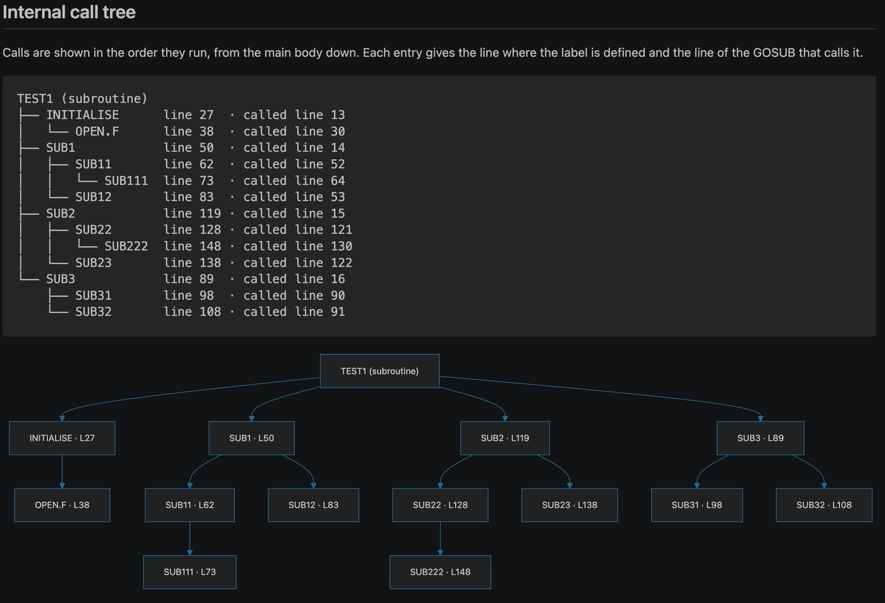
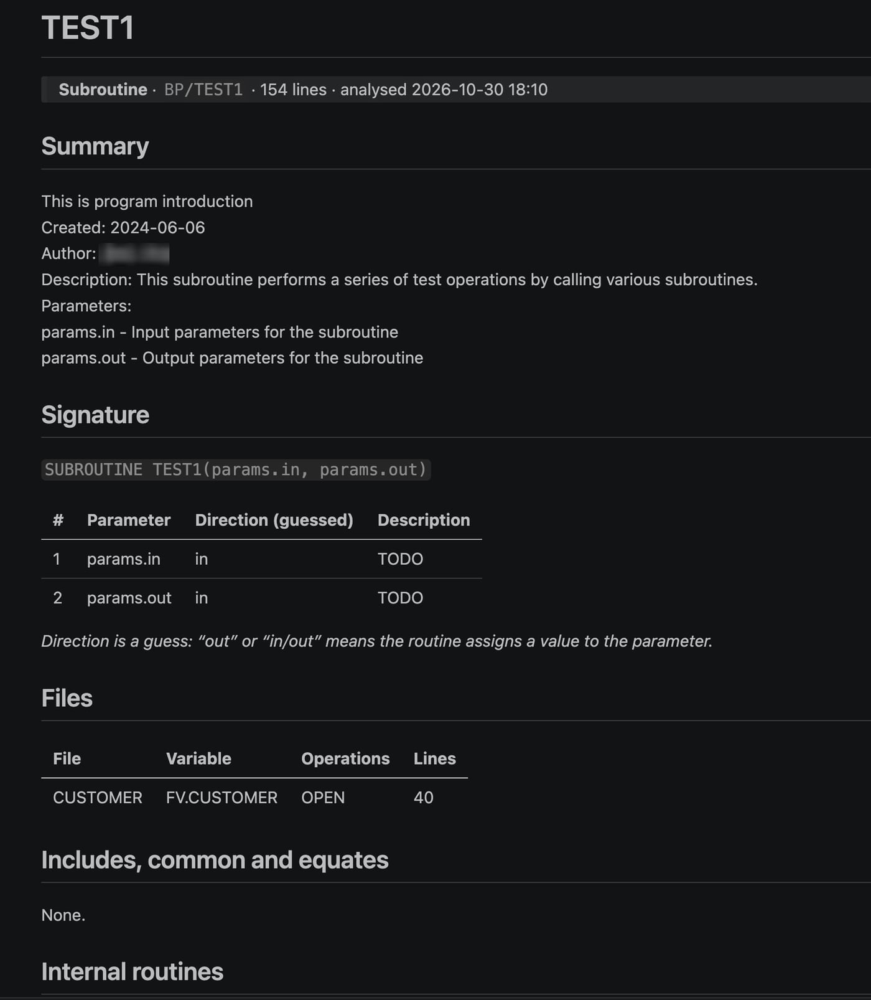
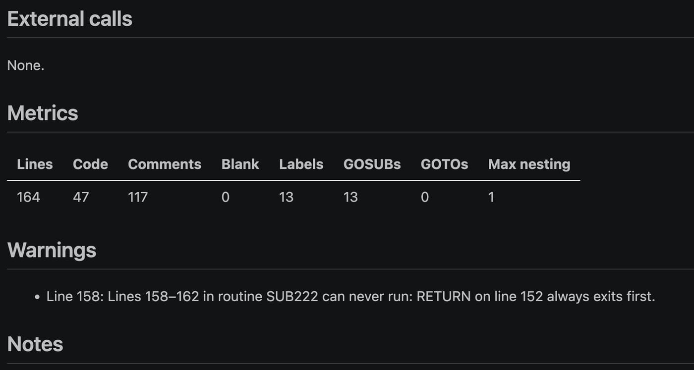

Free VS Code extension · Rocket UniVerse BASIC
Your BASIC has a long memory.
Now it has a map.
Open any UniVerse program, press one key, and get a clear report: every GOSUB traced in call order, the files it touches, and the dead code hiding in the corners. Built for the systems that have quietly run the business for decades.
>ED BP TEST1 0001: PROGRAM TEST1 0002: GOSUB SUB1 0003: GOSUB SUB2 0004: GOSUB SUB3 0005: STOP 0006: SUB1: 0007: GOSUB SUB11 0008: GOSUB SUB12 0009: RETURN .... 0085: END >
TEST1 (main program) ├── SUB1 line 6 · called 2 │ ├── SUB11 line 12 · called 7 │ │ └── SUB111 line 20 │ └── SUB12 line 28 · called 8 ├── SUB2 line 57 · called 3 │ ├── SUB22 line 64 · called 60 │ │ └── SUB222 line 78 │ └── SUB23 line 72 · called 61 └── SUB3 line 35 · called 4 ├── SUB31 line 41 · called 36 └── SUB32 line 49 · called 37
A lineage worth looking after
- 1965
Don Nelson and Dick Pick build GIRLS at TRW, the system that becomes Pick.
- 1973
Microdata ships it commercially as the Reality operating system.
- 2010
Rocket Software takes over the U2 family, home of UniVerse.
- Today
Your programs get a map, right inside VS Code.
One report. Six attributes.
Like a good record, every report has a predictable layout. Here it is, attribute by attribute.
- REPORT<1>
Internal call tree
Every internal subroutine from the main body down, SUB1 → SUB11 → SUB111, in the order the calls run. Drawn as text and as a Mermaid or Markmap diagram.
- REPORT<2>
Files and records
Each file opened, read, written, selected or deleted, with its file variable and the lines that touch it.
- REPORT<3>
Warnings that matter
Unreachable code, missing and duplicate labels, routines that fall into the next one, dynamic CALL @s and READU without LOCKED.
- REPORT<4>
Signature and wiring
Parameters with their likely direction, plus $INCLUDEs, COMMON blocks and EQUATEs.
- REPORT<5>
Less noise
Hide the helpers every program calls, like OPENFILES or ERR.*, so the tree shows the logic that matters.
- REPORT<6>
Your notes, kept
Write in the Notes section. Re-run the analysis after a change and your notes are still there.
þ is the attribute mark, CHAR(254). Old habits.
What lands in your browser
A Markdown report, rendered with tables and diagrams. Readable in Chrome, Edge or VS Code's own preview.



Up and running in a minute
Install
Click Install on the Marketplace, or search for “MultiValue Basic Analyser” in the VS Code Extensions view.
Open a program
Any UniVerse BASIC source, with or without an extension. Files in BP folders work as they are.
Press Ctrl Alt A
The report is saved as Markdown and opens in your browser. On macOS, use Cmd Alt A.